| 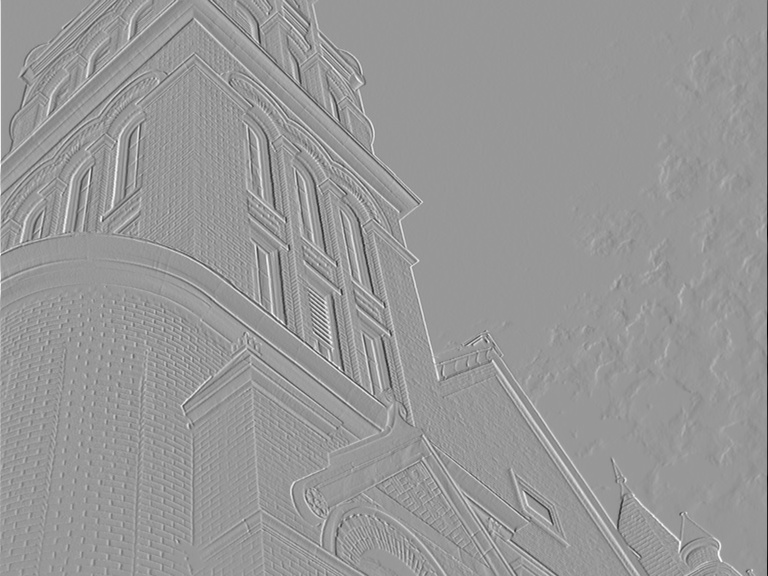 | 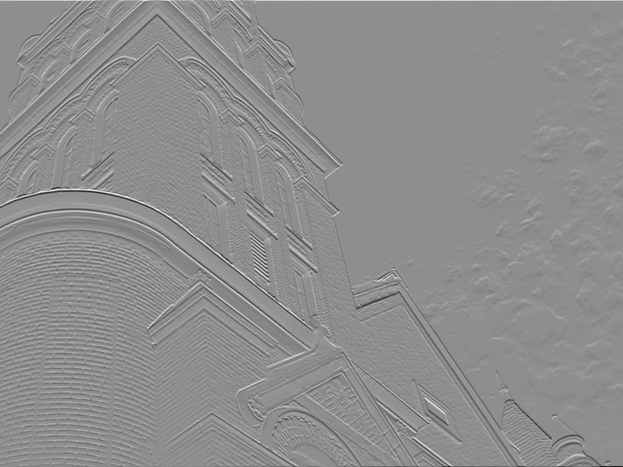 | |
Horizontal Gradient, sigma = 0.5 |
Vertical Gradient, sigma = 0.5 |
Gradient Magnitude, sigma = 0.5 |
| 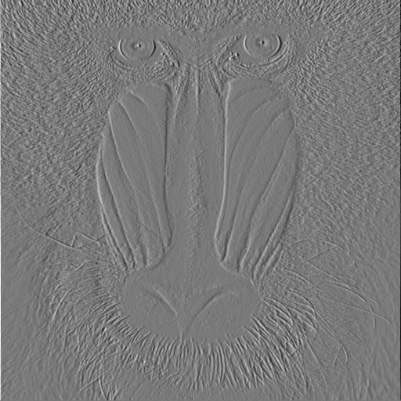 | 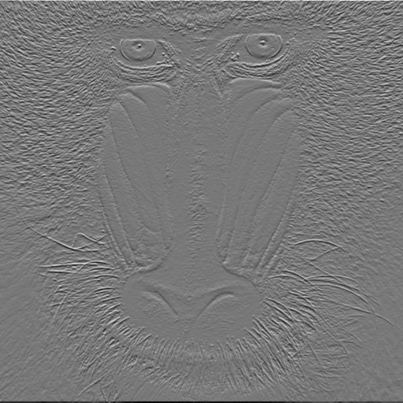 | 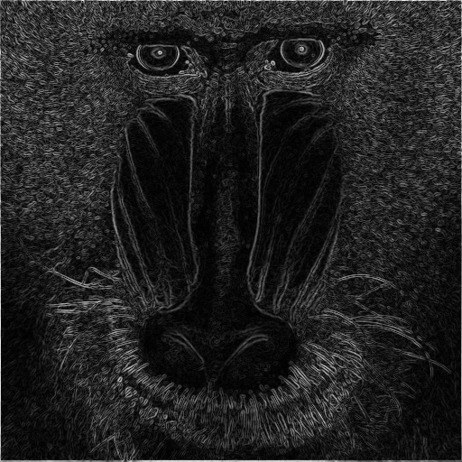 |
Horizontal Gradient, sigma = 0.5 |
Vertical Gradient, sigma = 0.5 |
Gradient Magnitude, sigma = 0.5 |
| 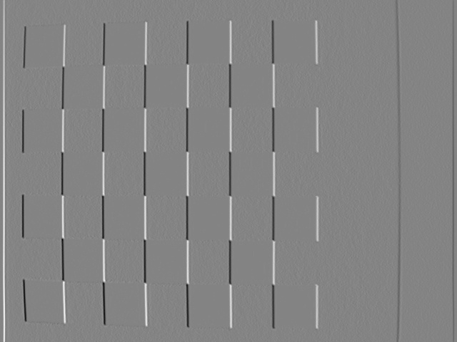 | 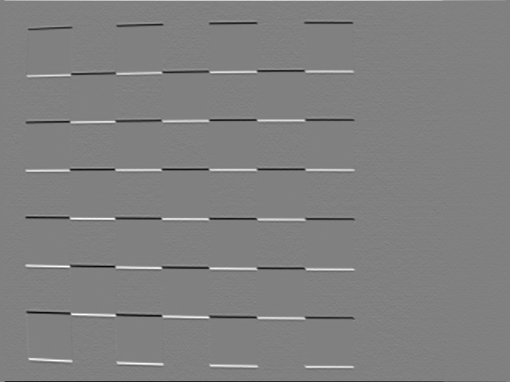 | 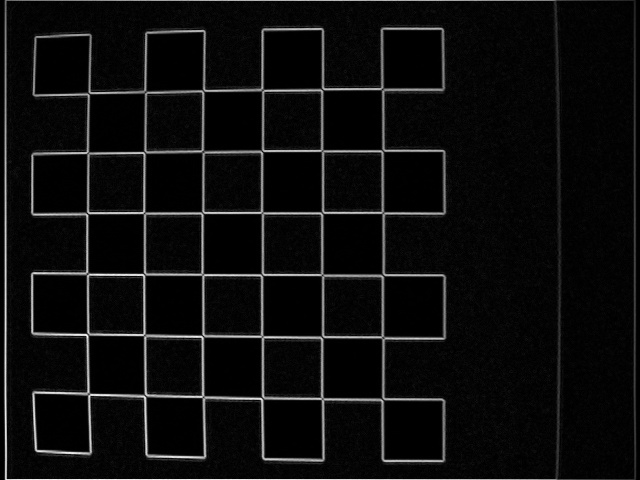 |
Horizontal Gradient, sigma = 0.5 |
Vertical Gradient, sigma = 0.5 |
Gradient Magnitude, sigma = 0.5 |
| 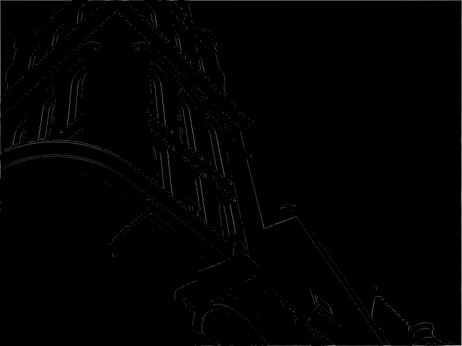 | 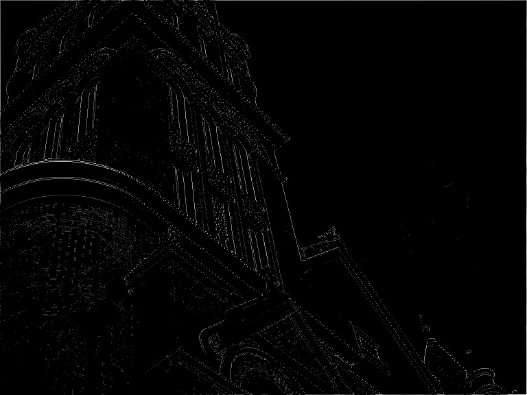 | |
sigma = 1.0 |
sigma = 0.5 |
|
| 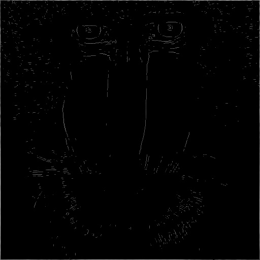 | 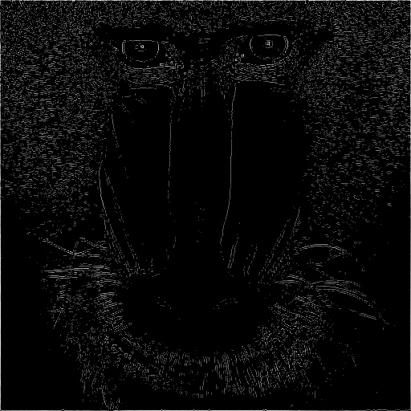 | |
sigma = 1.0 |
sigma = 0.5 |
| 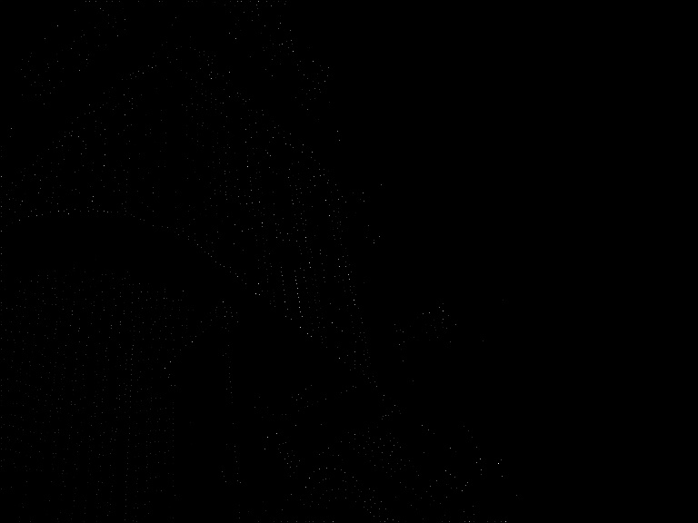 | 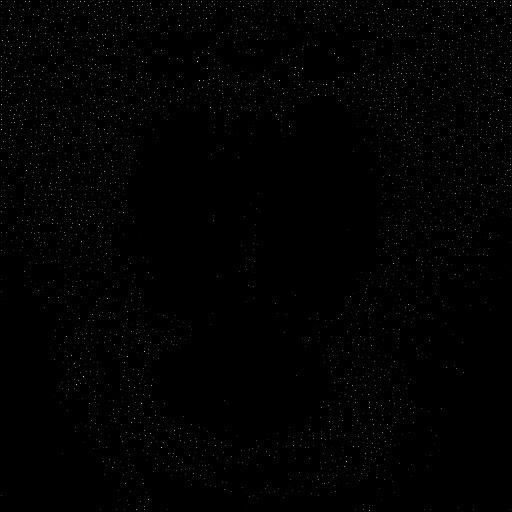 | |
Building, sigma = 0.5 |
Checkers, sigma = 0.5 |
Mandrill, sigma = 0.5 |
| 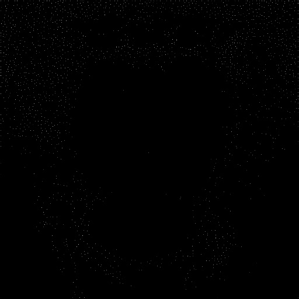 | ||
Mandrill, threshold_low = 0.01, sigma = 0.5 |
Mandrill, threshold_low = 0.02, sigma = 0.5 |
Mandrill, threshold_low = 0.04, sigma = 0.5 |
| 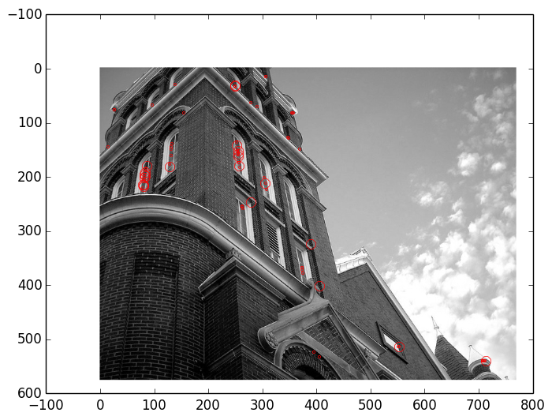 | 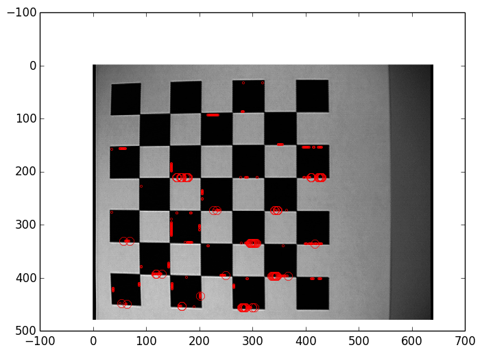 | 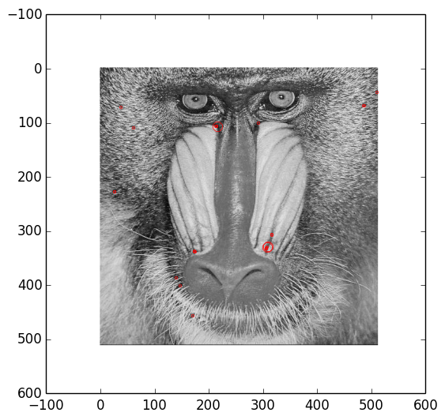 | 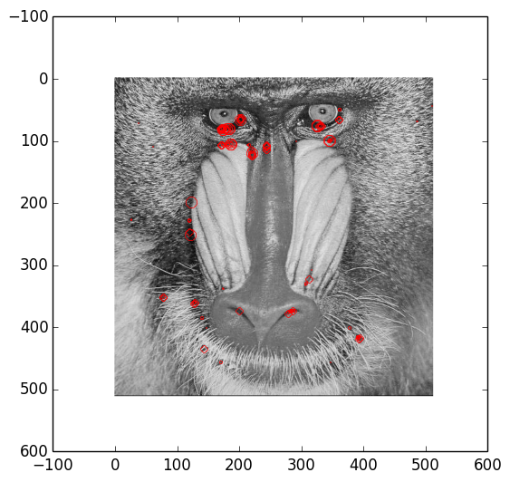 |
sigma = 1.6, nOctaves=1, nScales=1, delSigma=1.6, k=2^(1/3) |
sigma = 1.6, nOctaves=1, nScales=1, delSigma=1.6, k=2^(1/3) |
sigma = 1.6, nOctaves=1, nScales=1, delSigma=1.6, k=2^(1/3) |
sigma = 1.6, nOctaves=1, nScales=3, delSigma=1.6, k=2^(1/3) |
| 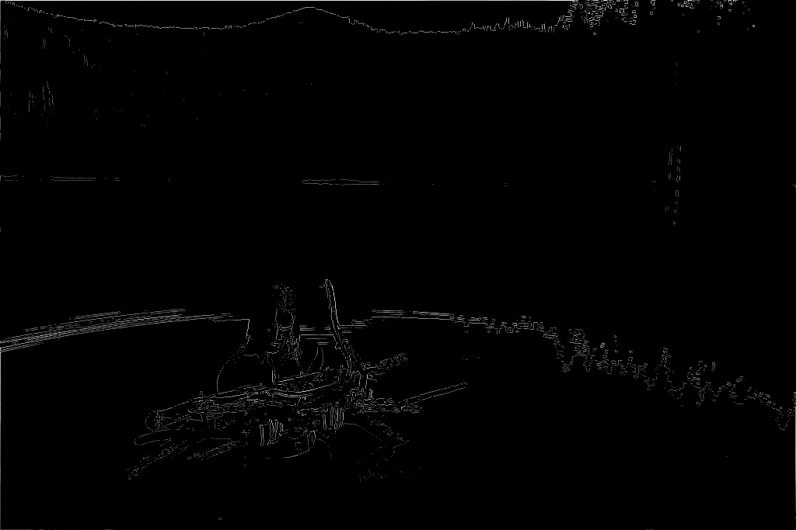 |
Edge - Edge detection depends a lot on the images and the sigma you use. For a constant sigma, I found that certain images (those with sharp intensity changes) show edges best. You can see this in the checkers.jpg above. Smaller sigma resulted in removing fewer frequencies, and so more edges show up (as does more noise). If we want the "strongest" edges, we should increase sigma.
Corner - The same sigma rules apply to the corner detector as to the edge detector. However, we can also modify the chain thresholds to get different results. Corners were notoriously "light". Which is why, in the above pictures, it helps to zoom in on the page. Higher thresholds = fewer detected points.
SIFT - This was a very difficult thing to implement for me. Unfortunately, y implementation is discarding too many points on the low-contrast test. Similarly, it seems to find an abnormally large number of keypoints as the number of scales go up. That said, it seems to find the most important keypoints of the image.